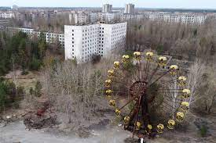
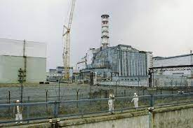
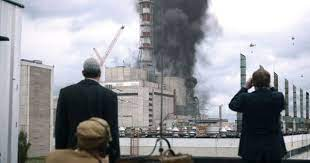
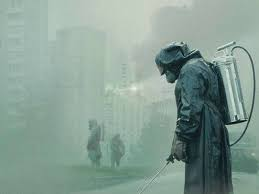

chernobyl

.gif)
El accidente comenzó durante una prueba de seguridad en un reactor nuclear tipo RBMK. La prueba fue una simulación de un corte de energía eléctrica para ayudar a crear un procedimiento de seguridad para mantener la circulación del agua de enfriamiento del reactor 4 hasta que los generadores eléctricos de respaldo
pudieran proporcionar energía. Se habían realizado tres de esas pruebas desde 1982, pero no habían proporcionado una solución. |
| En un cuarto intento, una demora inesperada de 10 horas significó que un
turno operativo no preparado estaba de servicio. |
|
cidades dañadas
Chernóbil, Central nuclear de Chernóbil, Ucrania, Prípiat, República Socialista Soviética de Ucrania
cuales osn las mutaciones de chernobyl. |
El Zorro Radiactivo de Chernobyl.
Mariposas Melánicas: mutaciones.
Arañas Gigantes: mutaciones en Chernobyl.
Plantas Bioluminiscentes: vegetación mutante.
Desastre nuclear de Chernobyl: Peces Transparentes.
Aves Bicéfalas mutantes.
Plantas Gigantes en Chernobyl.
Insectos Bioluminiscentes: mutación nuclear. |
La explosión del reactor mató a dos miembros del personal operativo del reactor.
Se inició una operación de emergencia masiva para apagar el fuego, estabilizar el reactor
y limpiar el núcleo expulsado. Durante el desastre y la respuesta inmediata, 134 personas
del parque de bomberos fueron hospitalizadas con síndrome de irradiación aguda debido a la
absorción de dosis altas de radiación ionizante incluyendo a Rasset Koslov (n. 1929). De
estas 134 personas, 28 murieron en los días o meses posteriores y aproximadamente 14 muertes
sospechosas de cáncer inducido por radiación siguieron dentro de los siguientes 10 años.89 Se
llevaron a cabo importantes operaciones de limpieza en la zona de exclusión para hacer frente
a la lluvia radiactiva local, y la zona de exclusión se hizo permanente.
   
|---|